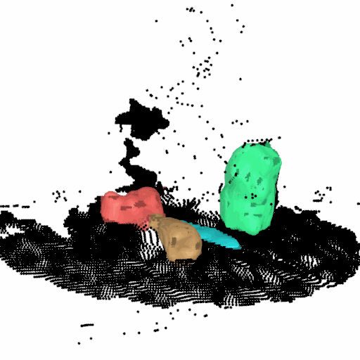
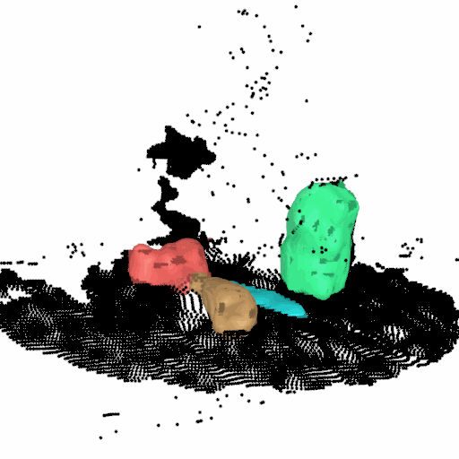

Herbie Wright
I recently graduated from the University of Utah with an Honors B.S. in Computer Science (Math minor). In fact, I just finished my honors thesis. I am a member of the LL4MA Lab under Dr. Tucker Hermans, studying tabletop scene perception for manipulation (I am also co-advised by Dr. Weiming Zhi). I am applying for PhD positions for Fall 2025 to continue doing manipulation related research.
Research Highlight - V-PRISM
Github → | Arxiv → | Website →
"V-PRISM: Probabilistic Mapping of Unknown Tabletop Scenes" By H. Wright, W. Zhi, M. Johnson-Roberson, T. Hermans.
 

Volumetric, Probabilistic, and Robust Instance Segmentation Maps (V-PRISM) is a method that probabilistically maps a tabletop scene of multiple objects. It takes in a segmented point cloud and builds a distribution of possible instance segmentation maps. This means that it can capture principled uncertainty about occluded areas of the scene.
I presented this work in 2024 IEEE/RSJ International Conference on Intelligent Robots and Systems (IROS) in Abu Dhabi. The paper is also up on Arxiv here.
Papers
- H. Wright, W. Zhi, M. Johnson-Roberson, T. Hermans. "Robust Bayesian Scene Reconstruction by Leveraging Retrieval-Augmented Priors". Arxiv, 2024. Learn More →
- H. Wright, W. Zhi, M. Johnson-Roberson, T. Hermans. "V-PRISM: Probabilistic Mapping of Unknown Tabletop Scenes". In 2024 IEEE/RSJ International Conference on Intelligent Robots and Systems (IROS), 2024. Learn More →
You can also view my work from Google Scholar
You can see the source code for this site here